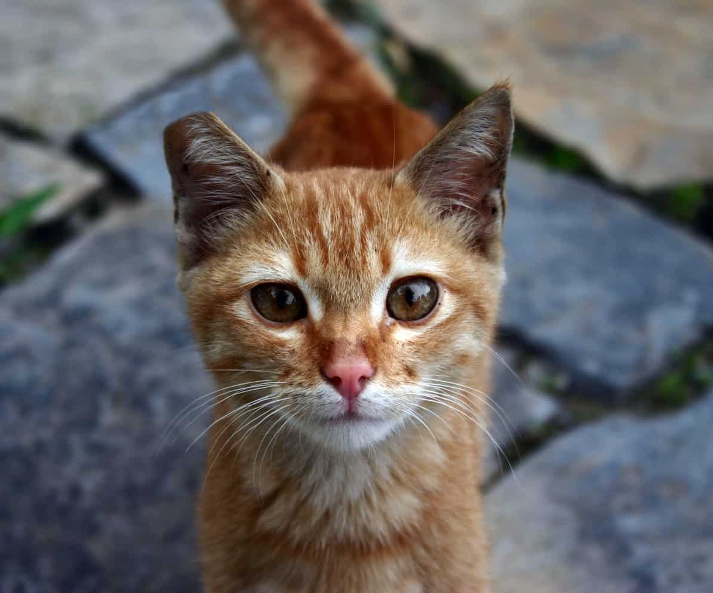

TNR in NYC
Trap-Neuter-Return (TNR)
a system that traps colony cats, neuters them and returns them back to their local colonys.
The most humain way to deal with overpopulation of local colonies, TNR helps colonies stay healthy. Ear-tipping is the most reconized way to identify a TNRed cat. These cats are home in their local New York colony.
Local Organizations
There are already many established groups dedicated to helping out our feline friends. Become active in your communitys TNR program, learn what you can do for them and what they can do for you. Want to learn more? Click here!Online Organizations
Either you're not a New York City resident or you want to see what other place are doing with TNR, there are many online groups. Follow their events, become inspired or learn what these programs can offer. Want to learn more? click here!Spay and Neutering
There are a number of veterinary providers in New York City who offer free or low cost spay/neuter for feral cats. Many require TNR certification to qualify, which can be obtained by attending a Neighborhood Cats TNR Workshop. Check with the clinic you're interested in for pricing, how to schedule appointments and eligibility requirements. To learn more, click here!